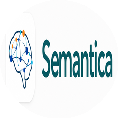

GitHub 当日 · 涨星最高
单日涨星
+2655
AI 居然会
自我进化
#01
自我进化
AI 帮自己变聪明
PrimeIntellect-ai /
prime-agent
会自我进化的 AI 编程 agent
今日涨星 · 当日最高
+2655 ★
TypeScript
自托管
MIT
自我进化
后台常驻
并行干活
越用越聪明的 AI
自我进化机制
1
复盘工作轨迹
做完活回头复盘，哪些套路管用
2
套路存成技能
管用的写回状态，下次直接调用
3
派子 agent 并行
多个子 agent 同时干，互相对话
100m
80m
60m
40m
20m
#02
决策可溯
让 AI 决策说得清
semantica-agi /
semantica

给 AI 装可追溯记忆图谱的基建
今日涨星
+967 ★
Python
图谱记忆
MIT
决策可追溯
图谱记忆
自托管
让 AI 不再是黑盒
黑盒 变 可追溯
多数 AI
决策像黑盒
存向量不存意义
决策说不清为什么
没法审计留痕
semantica
可追溯图谱
每步都能查到依据
构建图谱不需 AI 参与
金融医疗可审计
AI 基建
两条路
自我进化
prime-agent
让 AI 自己变强
决策可溯
semantica
让 AI 说得清
你最想尝试哪个？
prime-agent
semantica
关注我，下期见